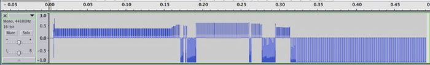

A World Bridge ™ Partners include: NASA Ames Research Center; Kennedy Center for the Performing Arts, Alaska State Council on the Arts (more in process)
This unique project explores the relationship between the Artist and the Scientist, where the art within science is revealed to science students by their artist peers, and the science within the art is demonstrated to the arts students by the young scientists. In order to achieve the design, development and implementation of this program, the initial prototype is conducted through collaboration between the Kodiak Island Borough School District (KIBSD) in Kodiak, Alaska, and the Fei Tian Academy of the Arts in New York.
The Main Project is based upon the Cultural Theme, and operates through Collaboration in multidisciplinary projects.
Arts Focus includes Cultural sharing, Music, Dance, Visual arts:
- KIBSD - Traditional Western and Alaska native instruments, music, dance, art, culture. Kodiak is the hub for the "Munartet Project: Teaching In and Through Arts and Culture" - a partnership with the Alaska State Arts Council (ASCA), Kodiak Island Borough School District, Kodiak College, the Alutiiq Museum and Repository and Kodiak Arts Council, to increase the number and tenure of confident, competent K-12 generalist and specialist teachers of the arts in Alaska. Incoming teachers need support to connect their classrooms to place-based and culturally sensitive, appropriate materials that reflect the great diversity of the student population. Through the Munartet Project, the partners will address the issue of developing a solid, sustainable pipeline for teacher preparation and in-service training. The core of this partnership is the partners’ belief in the importance of creating access for students to opportunities for creative thinking and expression in order to understand their own cultures and place in the world.
- Fei Tian Academy - Traditional Chinese instruments, music, dance, art, culture
Science Focus: International Earthquake Signal Precursors (ESP) project.
- KIBSD - A World Bridge ESP (formerly Global Earthquake Forecast System - GEFS) project students and support for earthquake precursor signal development and signal analysis.
- Fei Tian - Data acquisition, analysis and sonification for music project
Project Components
Part 1: Cultural Sharing of traditional arts and music
Part 2: Collaborative Projects
Multidisciplinary - Arts, Science, Culture: Acquisition and analysis of Earthquake Signal Precursors data to create Sonification of Earth’s signals. We listen to the Earth’s music, telling a story of what’s happening, feeling at the meeting of the continents.

Arts/Music: Baseline = middle C. Negative signal = lower register, positive signals = upper registers. Take the characteristics and sonification and create tracks of music. Prior to event = first movement. During event/buildup = second movement. Post event = return to calm, third movement.
Compose a main theme for each movement, then sub-tracks within.
Combine eastern and western instruments, share history and significance of each instrument.
Arts/Dance: Choreograph a dance performance to express each movement. Main musical theme of each movement represents one track of the performance. Signals within the main theme represent the secondary dance and choreography within the main movement.
Arts/Visual: Background scenery and visuals designed to support the music and dance performances
Language/Culture - a story is written to “interpret” the messages expressed by the Earth. Perhaps the story is also expressed aa visual background for the dance/music performance.